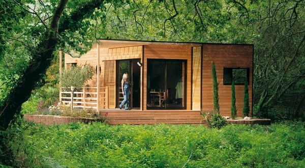
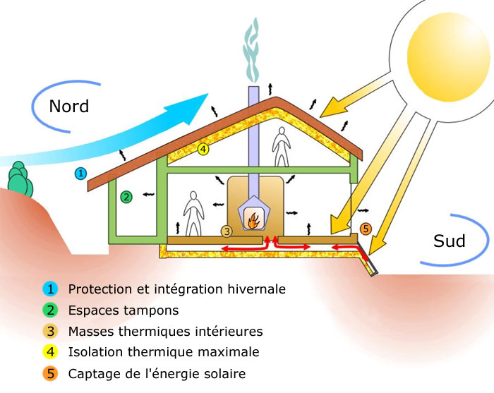
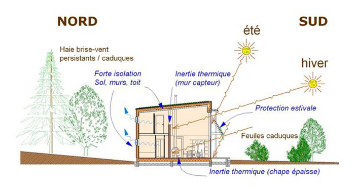
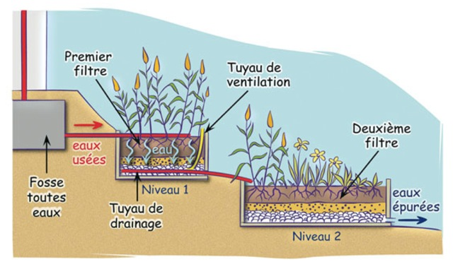
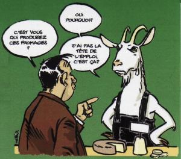
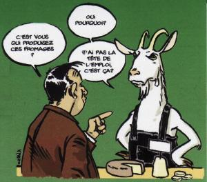

Le projet s'inscrit dans une démarche de développement durable, d'éco-construction, écologique et de respect de l'environnement.
Cela signifie :
- Des constructions bio-climatiques en agro-matériaux et en matériaux recyclables
Pour l'habitat groupé (logements et espaces mutualisés) et pour les bâtiments liés aux activités économiques.
Les agro-matériaux de la région sont le chanvre, la paille, le miscanthus : ce sont d'excellents isolants.

habitat écologique
- Des bâtiments bio-climatiques et l'utilisation des énergies renouvelables


on peut le faire.com
technique bioclimatisme
- un retraitement naturel de l'eau par des zones de phyto-épuration,
- la récupération des eaux de pluie
- le compostage
- les toilettes sèches

 

- Des espaces mutualisés :
Outre d'apporter la convivialité et de favoriser le "vivre-ensemble" d'une part, la mutualisation des espaces permet
de réduire la taille des logements, tout en permettant à chacun de trouver des espaces dont il a besoin : notre empreinte
au sol est donc réduite.
Une mutualisation de certains espaces, tels que le café associatif, pour des activités internes au collectif.
Des activités tournées sur l'extérieur et ouvertes à tous permet aussi de réduire la surface des
constructions : une autre manière de réduire son empreinte écologique et d'optimser les espaces non privatifs.
- Consommer local et favoriser les circuits-courts :
Privilégier le recours aux artisans et aux entreprises locales
Faire le choix des filières courtes de construction et d'approvisionnement
pour limiter les effets négatifs du transport des matériaux.
Favoriser l'emploi de proximité et contribuer à la dynamique du territoire.
Mettre en place une AMAP ou être un lieu de distribution pour les producteurs locaux.